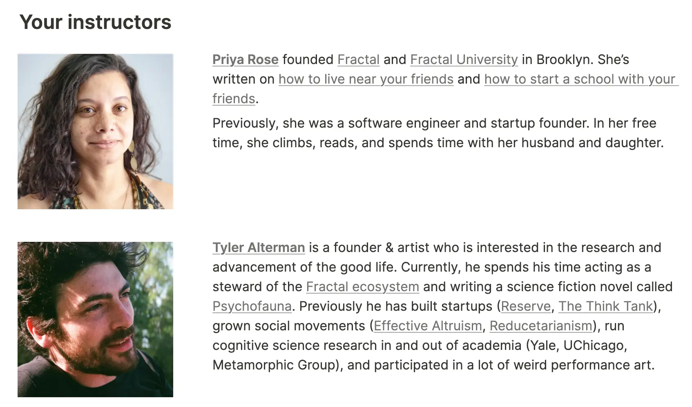

- Alex and Simmo group house, parent page
- 2025-08-25
- Read through this and realised it starts on the 1st of Sep, which is when we’ll both be at Casa Tilo for “Ship It Week”, which seems like pretty much absurdly perfect timing (in-person synchronous working, focus, etc)
- We’ve missed the application deadline by 10 days (as of the time of writing), but I imagine there’s still time
- The current plan is “Simmo goes to Dahab whilst we plan a Fractal or a similar thing”, but it does seem to me like this accelerator could (clue’s in the name) massively accelerate things, and also increase the p(the thing goes really well)
The support of experts
- A thing to note is that this is almost certainly by far the best way to start a Fractal. Rather than “Simmo is in Egypt and Alex is in Oxford and we make a website and do some tweets”, it’s an accelerator with Tyler Alterman and Priya.
- So not only do you get their expertise and advice, you also get their guidance, their buy-in and “we’re rooting for you” energy, synchronous time, etc. Vs if a month from now we decided to do a Fractal in Oxford, they’d be less available, because the intense container has just ended, we missed the ideal chance
Concerns
1. It’s a bit soon
- We’re still not sure about London vs Oxford vs a third place. We’re not people like Priya & Andrew who have been living in a city for a while and know it’s definitely the place. We’d need to quickly decide “ok yes it’s Oxford, forget London, let’s do it”
- Counterpoint here is that I doubt we’ll get much useful data in the next 1-3 months re: London vs Oxford, they feel fairly similar in my head. I could sublet in both, but I can’t help but imagine that my end state will be “yep, either is great”. I just don’t think there are strong differentiators here, at least for me
2. Are we skilled enough
- I haven’t built anything substantial before. I’ve had some great jobs, I’ve got good operational skills, great executive function, but I’ve never founded my own big project, not to mention I’ve never been anything like a community organiser or community hub/spoke.
- I think we’d learn by doing, of course, but I think considering it’s just two of us, and neither of us are startup founders or anything, we’re a pretty amateur team
- I think Simmo has lots of in-person community/relational skill which he’s been honing for years and isn’t necessarily legible online but still very much exists
- And I’ve done lots of ground work over these last 2 years and feel like I’ve got the minimum viable stack for this now (vs e.g. when we collaborated in Asia)
3. Would Simmo want something close to a guarantee of greatness in a relatively short period of time
“You’re okay with imperfect starts → The number one failure mode of this type of project is thinking I want to build to build a campus for my closest friends and perfect collaborators, and then being disappointed that they don’t join. Your close friends will join…in a year or three. You have to create the thing first and make it awesome.”
- This rings a minor Simmo alarm bell in my head of “will he want it to be great ASAP, and will he also not want to commit to more than a year or two”
4. Logistics of going to Oxford straight after Ship It Week
“You are available to build a neighborhood campus now. This is a fast-paced course with a lot of hands-on work including choosing and announcing a location (”planting a flag”), hosting a weekly event, and launching the first semester of a community university.”
- You have to be present in the place for 5 out of the 6 weeks. So, as we’ll be at Casa Tilo for week 1, we’d need to immediately fly to Oxford, finding a sublet (this could be figured out during Ship It Week). I may need to return to Spain quickly to help my Dad get out of the hospital
💪 Commitment: • Most of your free time for the duration of the program. This includes lots of fun & socializing.
You will stay rooted in your city for the program duration, hosting a weekly event
5. Are we committed enough
You are rooted. You plan to stay in your current location for several years, and maybe even the rest of your life. You are prepared to keep travel to a minimum for at least the next year. You will be in town for at least 4 of the 5 weeks of the course.
- IMO this is a pretty new idea for both of us (that is, forming a Fractal) - probably only a few weeks old? Although percolating for longer
- The “maybe even for the rest of your life” is a total no-go at the moment → it’s not the case that either of us has been living in Oxford for n years and has certainty in the way that I imagine Priya and Andrew did
- I can imagine being happy in Oxford for 3+ years pretty easily
- I can imagine Simmo getting itchy after 1-2 years, potentially? This seems like one of the biggest cruxes to me
- Enneagram 7, novelty seeking
- Vs the counterbalancing thing of “long-term base, key part of a community, embedded in an awesome scene, etc”
- And for me: I’d like a home base, I imagine Oxford will be lovely and a huge improvement on digital nomad-ing & living at my mums or the EA hotel in Blackpool. But it’s not the case that I’ve already been living in Oxford for n years and can say “oh yeah I have high certainty that I’d be happy there potentially forever”. I think there’s high certainty that, with a successful or semi-successful Fractal, it’d be a great place for me for years, though. I have essentially 0 wanderlust or desire to digital nomad (vs I know that Simmo would like to e.g. visit South America, etc)
- If we’re considering a Fractal, I think we should speed up our consideration ASAP, because if we decide to pursue it, we could attend a container with Priya and Tyler, which IMO would >10x the p(we actually make it), p(it goes really well) etc
- This is a crux-y thing and I’d welcome pushback here. Perhaps Simmo could imagine us kind of “slumming it” on our own and still doing well. I think for me it’s a combination of the energy of a container, the pace, the support from experts, 1:1 guidance etc, rather than doing lots of things from scratch. They’ll have already solved many problems, they’ll be able to anticipate the problems and provide guidance and solutions in a way that would be much more efficient than solving everything from scratch, IMO. Especially as neither of us has experience creating a successful community - being able to draw from people who have done this and have now even planned a cohort to help people learn from them… I’d put solid money on our p(success) and p(velocity) being much higher as a result of the cohort

- Vs doing it ourselves → it’s just the 2 of us setting the pace, we’re remote (Simmo is in Dahab), we’re outside the container so getting much less help than the people who paid for the container